ESCC H&E treatment-benefit model: reproduction
Project README · Notebook entry point · Data contract
Public demonstration, not trial results.Clinical plots and tables below use a separate synthetic experiment. Three public TCGA ESCC slides demonstrate image processing and spatial visualization without using or inventing their clinical outcomes. The study workflow includes only published aggregate trial counts. Trial records, individual predictions, frozen paper-model parameters and private images are absent.
How the demonstration data were generated
Three separate components: a one-row fabricated clinical schema; independently simulated clinical/feature cohorts for training and inference; and actual public TCGA images with artificial coefficients for spatial visualization. None uses private trial patient data.
- Each clinical cohort contains 360 image-included and 30 excluded synthetic patients. Treatment alternates 0/1 for balanced arms. Two independent standard-normal variables U and V govern treatment heterogeneity and prognosis.
- The generating log treatment HR is −0.35+1.1U. PFS is exponentially distributed with rate 0.065 exp(0.2V+T(−0.35+1.1U)). Latent OS is latent PFS plus an exponential increment with mean 12 exp(−0.2V). Uniform 27–55 month censoring produces observed times and events.
- Age, sex, ECOG, TPS and response categories follow explicit constructed distributions documented in the README. These are not fitted to the trial distributions.
- Ninety random 1536-dimensional prototypes produce 24 noisy patch vectors per synthetic patient. Their mixture proportions depend on U, deliberately embedding a treatment-effect signal. PCA, K90 clusters, ridge Cox and ten-fold evaluation are actually fitted to these vectors. Displayed HRs and B/NB are fitted-model predictions, not the generating values.
- For TCGA, the image embeddings are real UNI-v2 outputs, but the spatial coefficients are explicitly set to 0.45 sin(0.51k), with illustrative SE 0.08 and a zero reference coefficient/covariance. They are not trained clinical effects. The resulting colored regions only demonstrate code and layout.
Both synthetic cohorts share one generating mechanism. Their apparent separation and external results have no evidential value for the paper's model performance. Full formulas and probabilities are in README and helpers/demo.py.
Repository contents
GitHub includes notebooks, helpers, public manifests, the fabricated one-row template and rendered demonstrations. Large WSI files and generated caches remain in the full local/server project. For a fresh clone, run notebook 02 in demo mode for clinical analyses; download the public slides and run notebook 01 before notebook 08.
Figure1: Study workflow
PNG · PDF · SVG · Editable PPTX
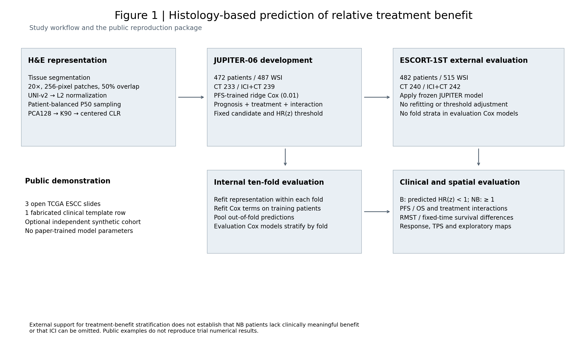
Figure2: Internal ten-fold survival and binary interactions
PNG · PDF · SVG · Editable PPTX
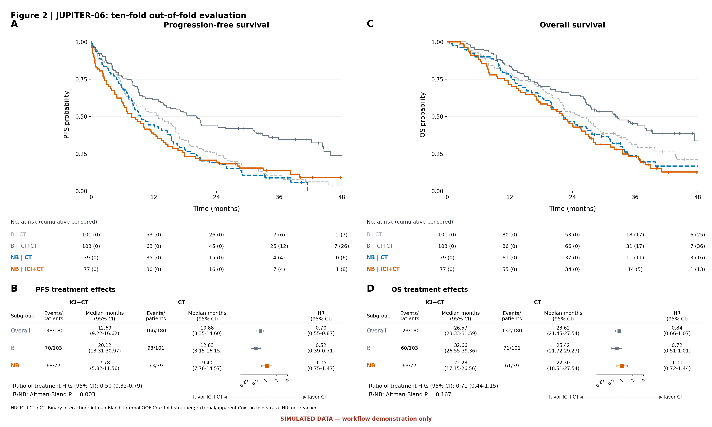
Figure3: Frozen external survival and binary interactions
PNG · PDF · SVG · Editable PPTX
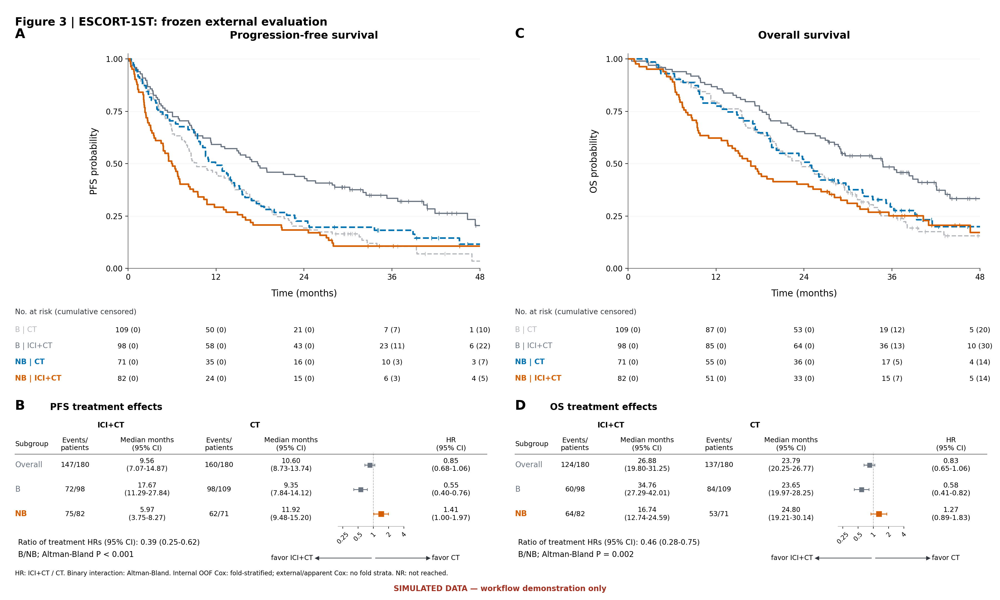
Figure4: Public TCGA spatial annotation demonstration
PNG · PDF · SVG · Editable PPTX
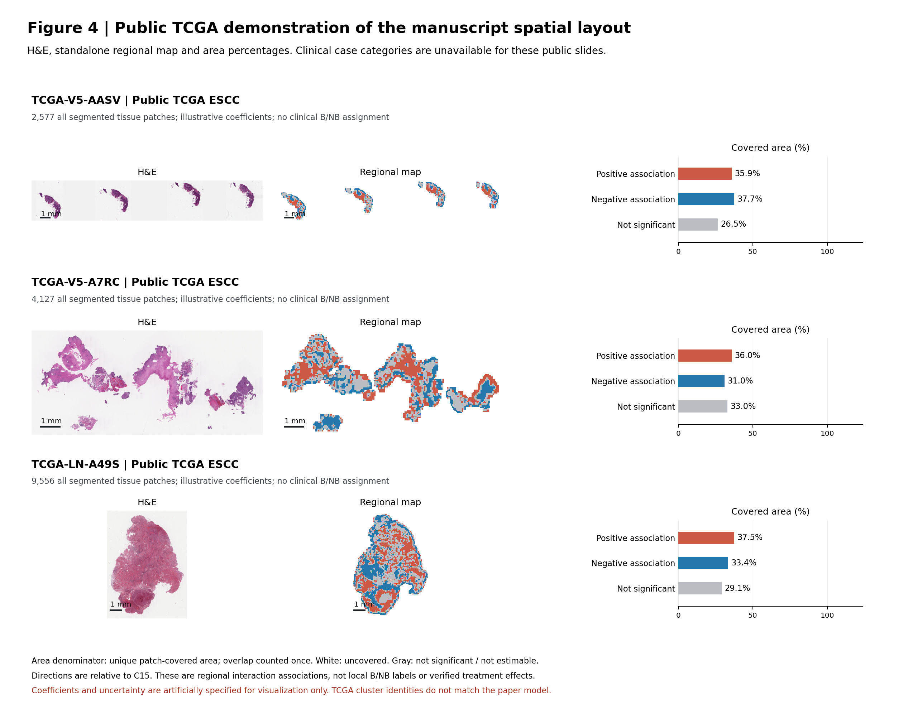
Table1: Restricted mean survival time differences
PNG · PDF · SVG · CSV
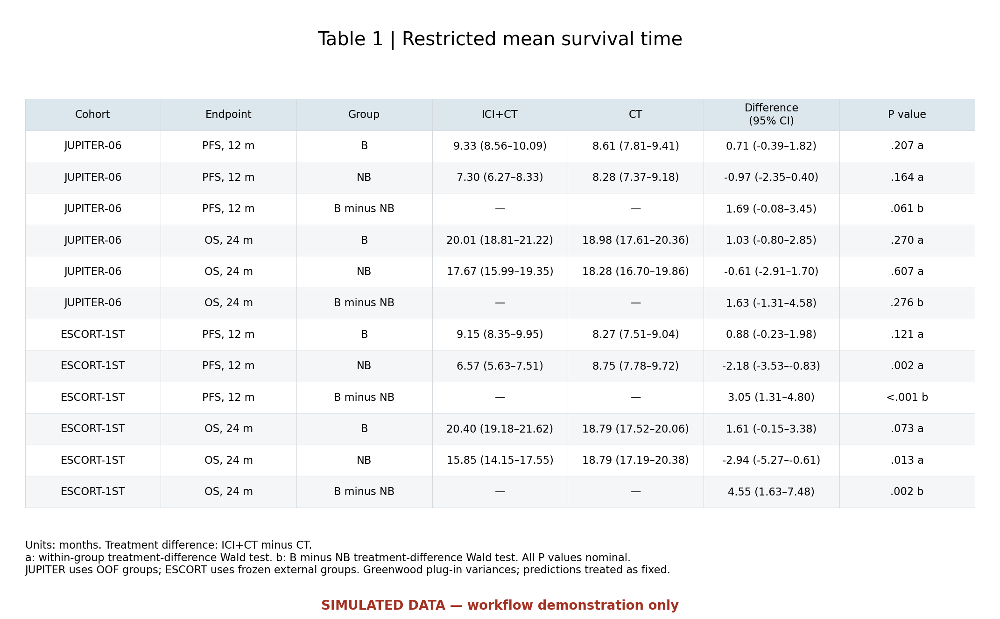
Table2: Fixed-time survival probability differences
PNG · PDF · SVG · CSV
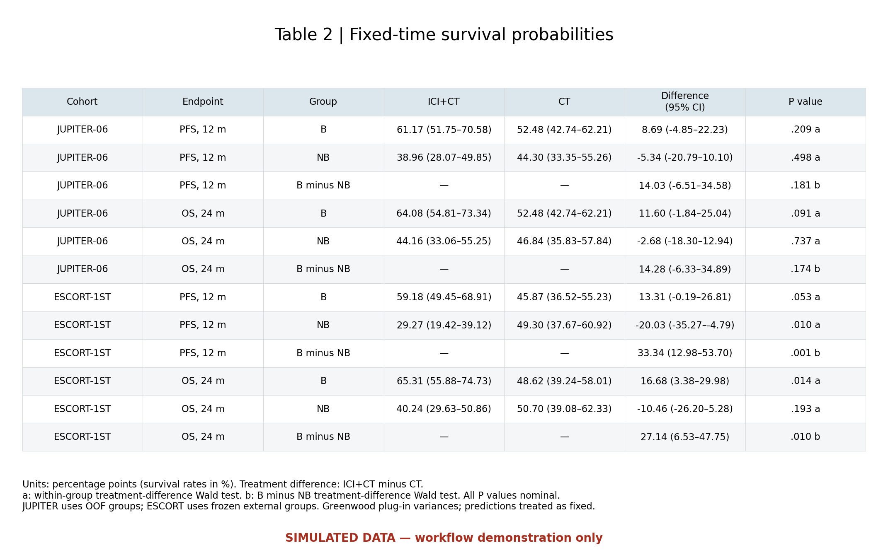
FigureS1: Apparent full-data development performance
PNG · PDF · SVG · Editable PPTX
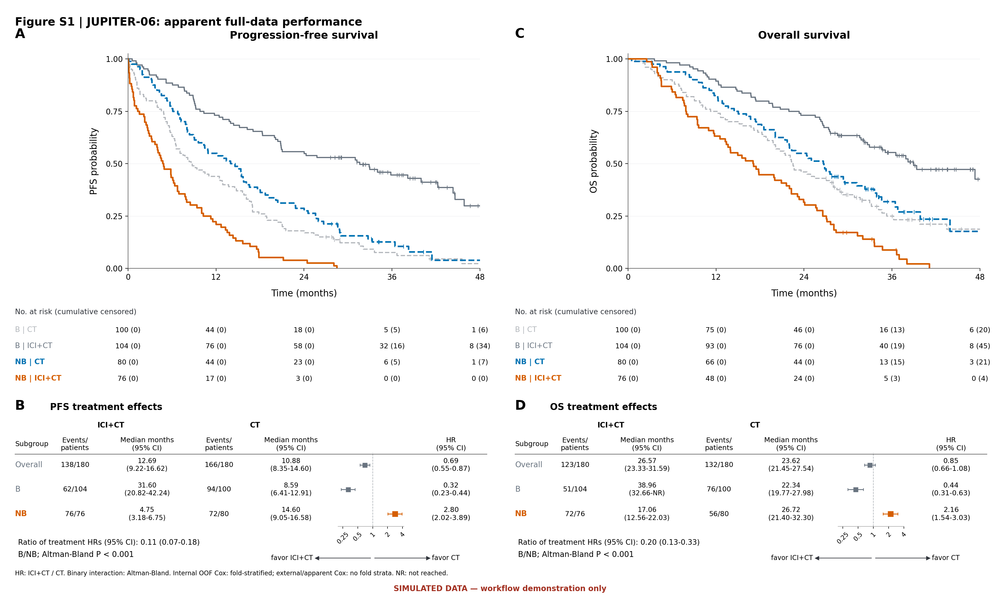
FigureS2: Objective response and disease control
PNG · PDF · SVG · Editable PPTX
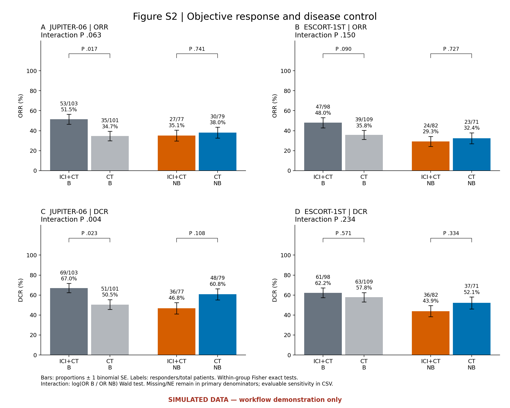
FigureS3: Raw-score continuous treatment interactions
PNG · PDF · SVG · Editable PPTX
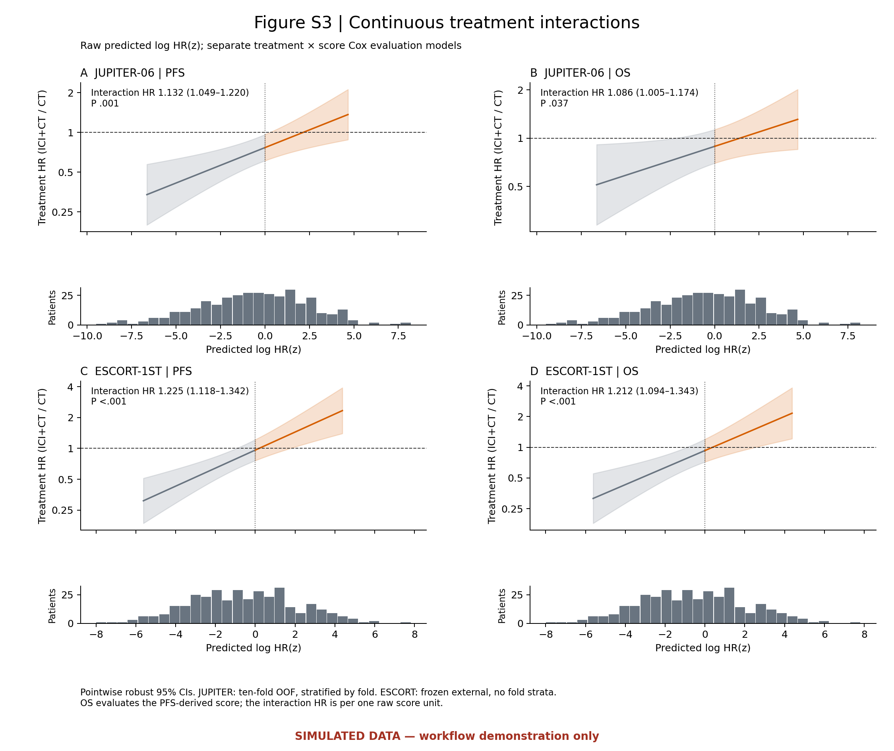
FigureS4: Public TCGA cluster atlas demonstration
PNG · PDF · SVG · Editable PPTX
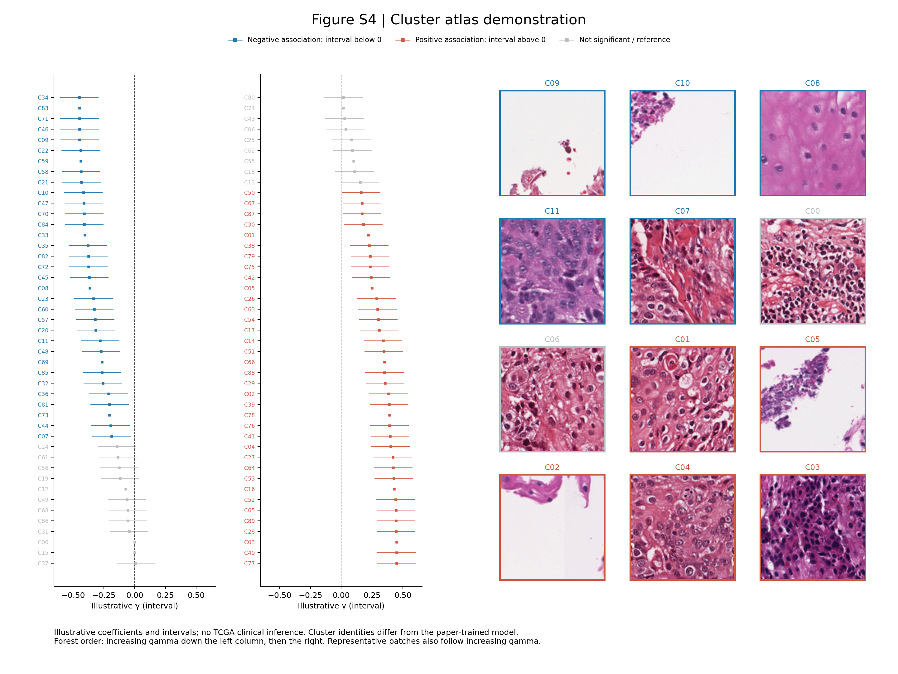
FigureS5: PD-L1 TPS distribution
PNG · PDF · SVG · Editable PPTX
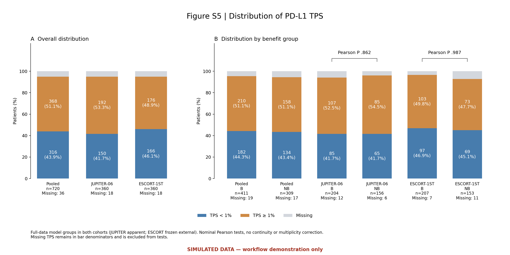
TableS1: Clinical characteristics by treatment arm
PNG · PDF · SVG · CSV
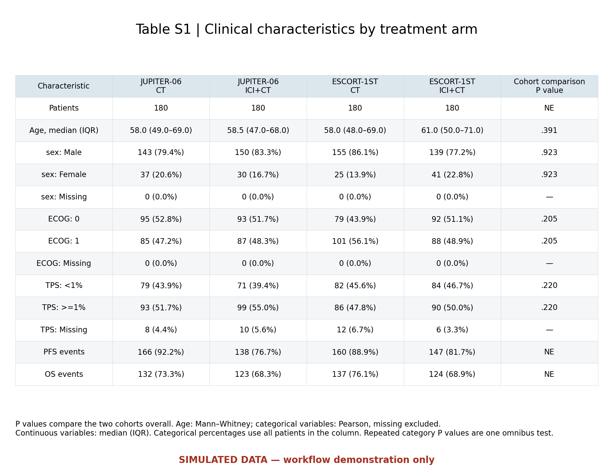
TableS2: JUPITER image inclusion comparison
PNG · PDF · SVG · CSV
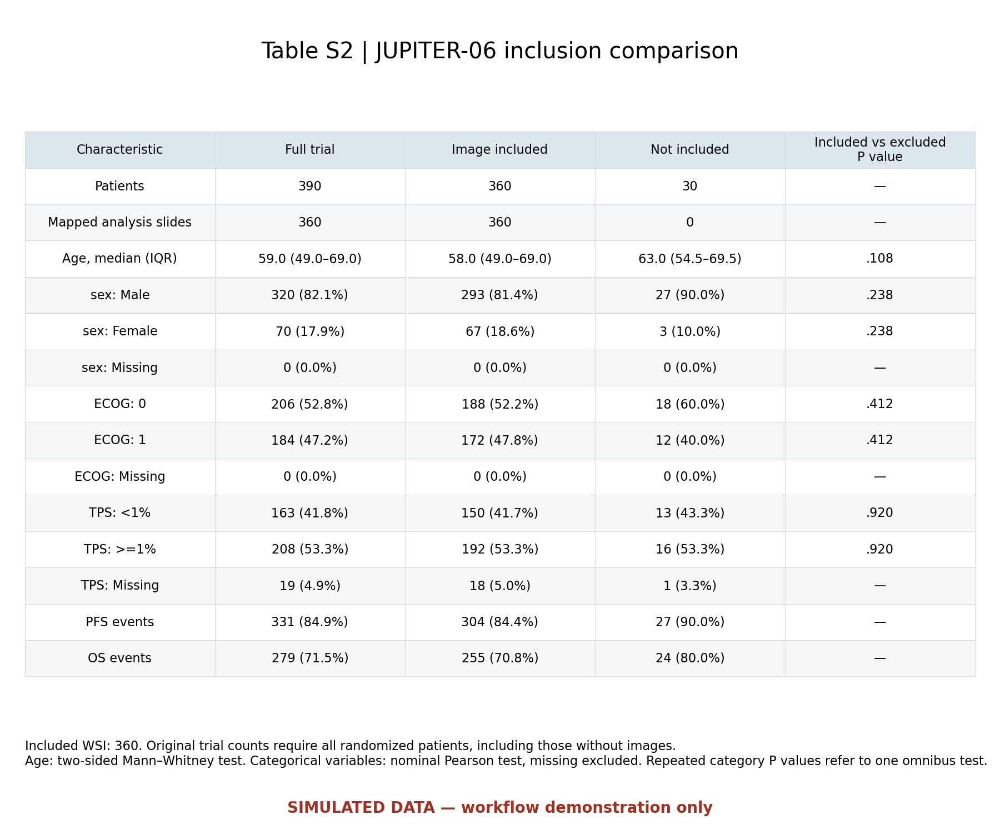
TableS3: ESCORT image inclusion comparison
PNG · PDF · SVG · CSV
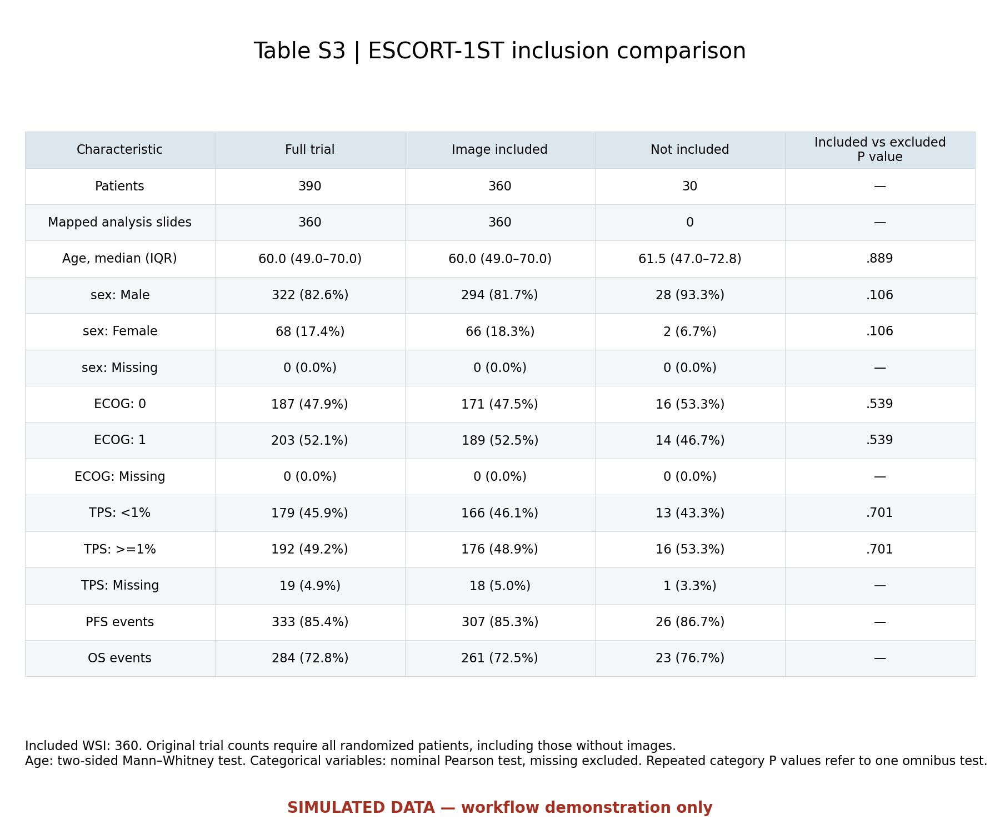
TableS4: Fixed-candidate ablations, combined endpoints and cohorts
PNG · PDF · SVG · CSV
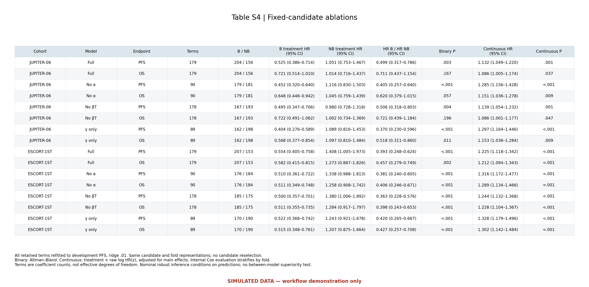